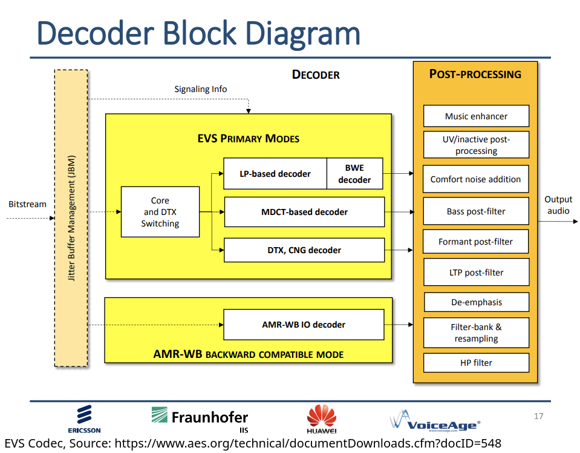

We know how to save it in an uncompressed file
We know how we can compress sounds for storage or transmission
… but isn’t speech special?
Is speech special?
What are speech codecs?
Why is bitrate is so important for speech?
How do speech codecs work?
Voice Encryption
Some theories treat speech perception like any other sound perception task
“We connect acoustic signatures to specific speech sounds like we do any other”
“Modeling the acoustics of the inside of a face is much like modeling the acoustics of the inside of a room”
Some theories treat speech as special
“Our perception of linguistic sound is fundamentally different than our perception of other sounds”
“We understand how human speech is made, so we use that specific knowledge to understand spoken language”
Are we able to analyze speech more effectively by using speech-specific algorithms?
Are we able to compress speech more effectively by using speech-specific algorithms?
Are we able to recognize speech more effectively by using speech-specific algorithms?
Are we able to generate speech more effectively by using speech-specific algorithms?
We are very sensitive to problems with the speech signal
Nuances which we might not notice in music are very noticeable in your BFF’s voice on Zoom
Tiny changes in the signal can have an outsized perceptual impact on speech
It’s very easy for a speech signal to sound ‘robotic’ or ‘distorted’
Analyzing Sound and Analyzing Speech are often done using the same tools
LPC was developed for speech, but is used for sound more generally!
MFCC was developed for speech, but is used for sound more generally!
Speech signal processing has driven general sound processing!
A ‘codec’ is used to encode and decode a signal
Often, codecs include some degree of compression
Many different codecs exist for the same kind of data
FLAC is a great lossless audio codec which works for any audio
mp3 and AAC are great lossy audio codecs which work for any audio
Opus is a great free and lossy audio codec which works for any audio
It’s easier to compress a file when we know which frequencies aren’t relevant and which are
Signals with a known kind and structure are easier to model more completely
Signals with strong autocorrelation and slow transitions are easier to model completely
Psychoacoustic knowledge about what’s most important allows us to make better decisions about what we throw away
So, do we compress better when we make a speech-specific codec?
“We know what speech is like, so let’s focus doing that better than anything else”
“We’re going to assume everything coming through is speech, and compress accordingly”
“I don’t care if it makes music sound worse, that’s not what we’re trying to do here!”
“I have very little bandwidth available, and I want to use all of it for the things that make speech understandable”
G.711: This is what Campus Phones and Landline networks now use
Adaptive Multi-Rate (AMR): Used to compress speech on cell networks. Will be replaced by…
Enhanced Voice Services (EVS): The next-gen, ‘5G’ codec for cell phone use
Speex: A speech-focused codec for low-bandwidth situation, largely replaced by…
Opus: A general purpose codec, but with a strong speech subsystem
We want the speech to sound as ‘clear’ and ‘interpretable’ and ‘natural’ as possible
We want the signal to be sent using as little data as possible
You cannot do both of these things at once
A better codec will ‘sound better’ for the same amount of bandwidth
This is the “Efficiency/Quality Tradeoff”
44,100 Hz 16bit WAV files will perfectly capture every detail of human speech which matters (for 1400 kbps)
The median internet upload speed is 44000 kbps
4G cell towers max out around 100,000 kbps total bandwidth for everybody connected to it
Global Satellite internet hotspots (e.g. Iridium GO! Exec) have a 22 kbps uplink
Speeds are not consistent, and degrade very quickly, so we need to compress
You can send any file over any connection if you’re willing to wait
Conversations require low latency to work well
You need to send the data faster than you can play it back, no matter your connection
It is much more acceptable to degrade a voice stream than it is to drop a voice stream
It’s not good to say “Ah, screw it, we’ll just send the latest chunk to catch back up and drop the stuff in the middle”
We can cope with a poor signal more easily than with an inconsistent signal that cuts in and out
So, it’s often better to send a lower bitrate just in case the signal degrades
Many speech codecs will offer different bitrate options
Options favoring quality, Options favoring compression
Sampling rate is also a meaningful variable
“Well, we’ve got lots of bandwidth right now, so let’s increase the quality”
“Uh oh, this person’s cell tower is a potato, let’s reduce the quality”
“Uh, nobody’s talking on this voice call, let’s compress hard”
Network conditions
Service Level (e.g. ‘5G’ vs ‘4G’ vs ‘3G’)
Data usage
Dynamic Measures of Quality of Experience
User choice!
G.711: This is what Campus Phones and Landline networks now use
Enhanced Voice Services (EVS): The next-gen, ‘5G’ codec for cell phone use
Opus: A general purpose codec, but with a strong speech subsystem
Released in 2014 by 3GPP, a consortium of standards-makers for mobile telecom
It offers a number of bitrates and sampling rates
It is heavily patent-encumbered, and requires licensing to use
It uses a number of techniques to compress sound
Step 1: Framing and Pre-Processing
Step 2: Encoding
Step 3: Error Correction Coding and Transfer
Step 4: Reconstruction and Playback
Framing: This is 20ms
Voice Activity Detection: Yep, same VAD we talked about a while back
Noise Removal: We covered this
There’s lots of other preprocessing we’re not covering…
Now, EVS looks at the frame’s acoustics and the VAD output and makes decisions about which encoding method(s) to use
ACELP and Residual Processing
MDCT Coding
This functions exactly the same as our familiar LPC when modeling the filter
It models the source using a codebook of possible excitation sequences
Some entries are fixed, and ‘come with the algorithm’ for use
We do the same thing we did with LPC in FLAC
Model the signal, then describe the noise that’s left over
ACELP allows us to capture more of the signal cheaply, now that it models the source too
Yes, this is the same thing that we talked about for mp3
Use a Modified Discrete Cosine Transform to turn the data into coefficients representing components in the frequency domain
Save more, less, or no detail for chunks of the signal based on how humans perceive sound
Psychoacoustic Models are used here again to remove unimportant sounds
This can be done on the ACELP residuals or the frame directly
EVS can choose which method works best for a given frame
For speech-heavy frames, use ACELP/Residuals
For music or other sound, use MDCT encoding on the frame directly
This is chosen using a classifier based on the audio and the VAD output
Encode each frame in a way that allows you to detect errors
Send frame information redundantly, allowing the receiver to reconstruct any frames which were lost in transmission
Specialized modes exist for particularly terrible channel conditions
We could spend a career on error correction methods
Send frames bundled together, for redundancy
Turn the ACELP and MDCT coded frames back into audio
Synthesize in high-frequency components which might have been dropped at a given bitrate
Post-Process as needed
Add in background noise during discontinuous transmission gaps


Why ACELP is useful and compresses better than LPC
Why you might want both a DCT and LPC mode for a codec
Why VAD is helpful in this process?
Custom designed for phone providers
It is a prototypical voice codec, purpose built
It is at the cutting edge, with all the features
It also uses an LPC-ish speech codec (SILK) and an MDCT encoder
It’s completely free and open source
Opus is used by YouTube, WhatsApp, Signal, SoundCloud, Vimeo, Discord, and more!
If you need a speech (or audio) codec, Opus is currently your best general choice
128kbps
64 kbps
32 kbps
16 kbps
8 kbps
6 kbps
16 kbps Audio
16 kbps Voice
8 kbps Audio
8 kbps Voice
6 kbps Audio
6 kbps Voice
128 kbps mp3
128 kbps Opus Audio
128 kbps Opus Voice
32 kbps mp3
32 kbps Opus Audio
32 kbps Opus Voice
8 kbps mp3
8 kbps Opus Audio
8 kbps Opus Voice
6 kbps Opus Audio
6 kbps Opus Voice
We get better compression when we model speech as speech
We get better performance when we model music as not-speech
Similar methods apply, but speech is different!
So, YES!
… and we can stream those frames over any connection
This allows something incredibly valuable
Then, we could turn them into electricity send them over radio waves
… but this caused a problem
Anybody can monitor radio waves, so no communications are private!
In WWI, WWII, Korea and Vietnam, radio encryption was not a thing
This meant that anything you said into a radio, Hitler heard.
This gave rise to the first method of voice encryption: Use a language the enemies can’t understand!
Speakers of obscure languages who speak their language as “code” during war to communicate
Choctaw, Cherokee, Comanche, Seminole, Navajo, and Basque were all used this way
Code words were used (“Turtle” for “tank”, “Gah” (“rabbit”) for R) to further complicate things!
The movie “Windtalkers” is about these soldiers
Let’s talk about Navajo
Lots of speakers, only in central US, no easy overseas relatives
Unusual consonants, length, tone, nasality
Complex modality, aspect
Noun class and classifiers
Strong synthetic morphology!
At the Battle of Iwo Jima, Major Howard Connor, 5th Marine Division signal officer, had six Navajo code talkers working around the clock during the first two days of the battle. These six sent and received over 800 messages, all without error. Connor later stated, “Were it not for the Navajos, the Marines would never have taken Iwo Jima.”
First, you encode the signal using a voice codec
The US Military has specific codecs for this, including MELPe
Then, you can just encrypt that stream!
It is several lifetimes worth of learning
But it involves using fancy math to obscure a series of bytes
‘Trap door’ functions are hard only in one direction
Prime Factorization is a good example
‘This number is the product of two very large prime numbers, what are they?’
Extremely expensive to calculate prime factors
Extremely easy to confirm that you’ve got the correct answer
Your passphrase is used to generate a key which is one large number in a trapdoor function
AES-256 uses 256 bit numbers to do this math
115,792,089,237,316,195,423,570,985,008,687,907,853,269,984,665,640,564,039,457,584,007,913,129,639,935 is the largest 256 bit number
You would need to try a lot of numbers (2^255 keys) to get the answer
If every computer on Earth worked together to crack an AES 256 key, it would take approximately 13,668,946,519,203,305,597,215,004,987,461,470,161,805,533,714,878,481 years (Source)
Not perfectly secure, but damned close
Exchange keys with the other party, somehow
Encrypt each frame (or packet of frames) along with a counter
Send frames as they’re generated
The receiver decrypts frames as they arrive, ensuring that the counter matches
This is the world’s worst explanation of AES Streaming using GCM
In a way that is (basically) impossible to read without the key
This is excellent for military communications
This is becoming common for police departments
It takes some extra processing, but it’s shockingly fast and efficient on modern machines!
Speech may be special
Speech codecs allow us to send voices over tiny bandwidths
Bitrate is hugely important, and the quality/efficiency tradeoff is difficult
Speech Codecs usually work using some flavor of LPC
Voice encryption just uses a speech codec, and then encrypts the output